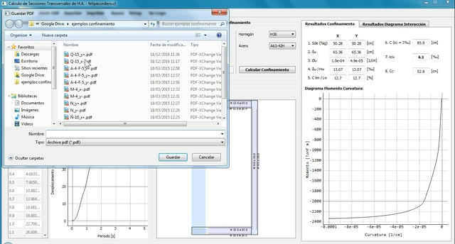
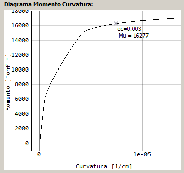

FELIPE CORDERO
Diseño de Software
Post-Procesador Etabs
Análisis Seccional
Muros de Contención
Modelación Estructural
Tutoriales
Software de Análisis Seccional
Contacto
Descargas
Análisis Seccional
Link de descarga del programa
Este programa permite analizar, con exactitud, secciones de muros compuestos de cualquier geometría, en base a la normativa vigente (DS 60). Se determinan:
Diagramas de interacción 3D
Modificación de armaduras
Demanda de desplazamiento
Diagrama Momento-Curvatura
Longitud de confinamiento

Video
Sección de Ejemplo
Parámetros de Diseño

Diagrama Momento Curvatura
Resultados
Previous
Next
Close